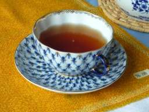
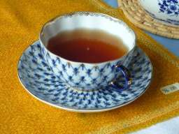

zuletzt aktualisiert am 14. September 2014 um 22:38 Uhr
Eckis Nachlass – Besonderes
Bitte auf die Bilder klicken, um sie in groß zu sehen!
Besonderes 041: Lomonossow-Tasse, fasst viel Tee, gut anzufassen, 40–60 Euro; nimmt Carsten, wenn sonst niemand Interesse hat (ich weiß genau, dass es mir fürchterlich Leid tut, wenn sie mir schließlich kaputt geht).
{kind=link}
Besonderes 042: siehe 041


{kind=link}
{kind=link}
Besonderes 177: gusseiserne Briefwaage; nimmt Jan, wenn sonst niemand Interesse hat


Besonderes 178: gusseiseren Tischlampe; RecyclingBörse


{kind=link}
Besonderes 180: nostalgische Küchenwaage; RecyclingBörse


Besonderes 181: Müsli-Set mit Getreidemühle; RecyclingBörse


Besonderes 204: Ton-Untersetzer mit Aufhängevorrichtung und Kachel; RecyclingBörse


{kind=link}
Besonderes 221: Damenfahrrad mit 3x7-Gang Kettenschaltung; nimmt Carsten, wenn sonst niemand Interesse hat


{kind=link}
{kind=link}
Besonderes 231: Stereoanlage, toller Klang, aber es reagieren mitunter andere als die gedrückten Tasten; kann Jan noch gebrauchen


Besonderes 232: Aalborg Dild Aquavit, Aalborg Jule-Aquavit 1998, 2000, 2005, Ingwer-Geist, Armagnac, Himbeergeist, dreigeschossige Flasche irischer Whiskey, Connemara peated single malt (irischer Whiskey), Rum-Manufaktur Braasch aus Flensburg, 8-jähriger Jamaica-Rum Plantation, 15-jähriger cubanischer Rum Matusalem, berühmter polnischer Wodka mit Grashalm, Booker's Bourbon Whiskey; Ausguss und Glasskontainer


Besonderes 236: englische Teedose; würde Carsten nehmen, wenn er die nicht bereits hätte


Besonderes 241: Kochbücher; RecyclingBörse


{kind=link}
{kind=link}
{kind=link}
{kind=link}
{kind=link}